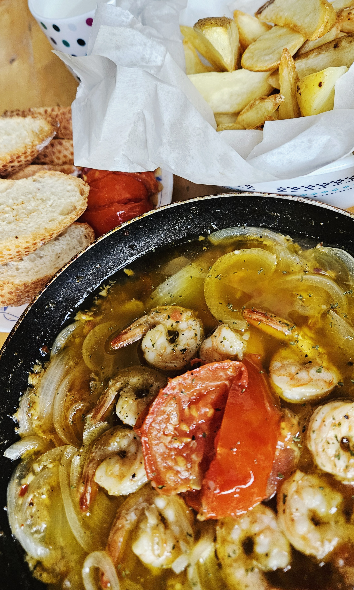
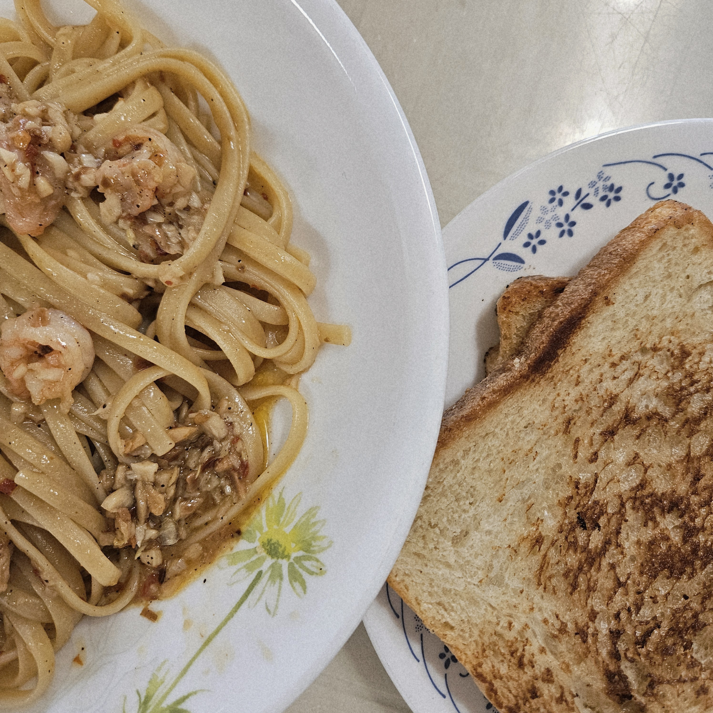

- 이름
- 본인 소개
- 좋아하는 사진 2장(취미)  
- 특기
- 장단점 1개 이상
김민주
소속 : 전자공학부 인공지능전공
생일 : 2004.03.27
지원 계기 : 전공과 관련된 역량을 키우고 싶고, 비슷한 분야의 사람들을 만나, 함께 공부하고 싶어서 지원했습니다.
가끔 레시피를 찾아 요리를 합니다. 여러 음식에 도전해보는 것도 좋아하고 가끔 요리 영상을 찾아보기도 합니다.
좋아하는 걸 오래 파고드는 게 특기입니다. 관심을 가지게 되면 꾸준히 관련된 자료도 찾아보고 정리하고 기록하고 아이디어도 내보며 오래 즐기는 편입니다. 직접적으로 건의한 건 드물지만, 생각해본 것들이 실현돼서 나오는 경우가 꽤 있었습니다. 관심을 깊게 가지게 된, 꽂히게 된 하나를 깊게 오랫동안 좋아하는 건 자신있습니다.
-장점 : 여러 분야에 호기심이 많고 배우는 걸 좋아합니다.
-단점 : 흥미의 지속력이 약합니다.